SparkCore
RDD编程
编程模型
在Spark中，RDD被表示为对象，通过对象上的方法调用来对RDD进行转换。经过一系列的transformations定义RDD之后，就可以调用actions触发RDD的计算，action可以是向应用程序返回结果(count, collect等)，或者是向存储系统保存数据(saveAsTextFile等)。在Spark中，只有遇到action，才会执行RDD的计算(即延迟计算)，这样在运行时可以通过管道的方式传输多个转换。
要使用Spark，开发者需要编写一个Driver程序，它被提交到集群以调度运行Worker，如下图所示。Driver中定义了一个或多个RDD，并调用RDD上的action，Worker则执行RDD分区计算任务。
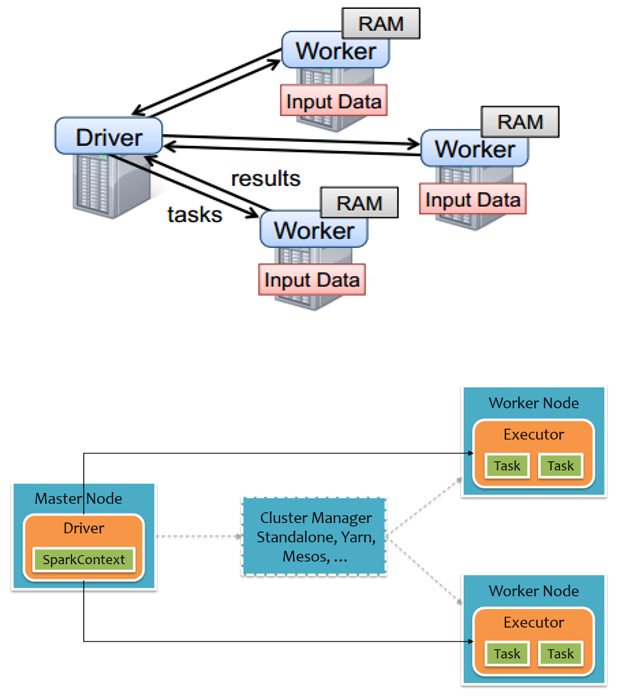
RDD的创建
在Spark中创建RDD的创建方式可以分为三种：从集合中创建RDD；从外部存储创建RDD；从其他RDD创建。
从集合中创建
从集合中创建RDD，Spark主要提供了两种函数：parallelize（并行）和makeRDD
1）使用parallelize()从集合创建
scala> val rdd = sc.parallelize(Array(1,2,3,4,5,6,7,8))
——>
rdd: org.apache.spark.rdd.RDD[Int] = ParallelCollectionRDD[0] at parallelize at <console>:242）使用makeRDD()从集合创建，其底层实现，其实就是调用了parallelize
scala> val rdd1 = sc.makeRDD(Array(1,2,3,4,5,6,7,8))
——>
rdd1: org.apache.spark.rdd.RDD[Int] = ParallelCollectionRDD[1] at makeRDD at <console>:24以上两种方法其实都有一个默认参数（defaultParallelism）没有传。这个默认参数就是分区，如果没有传他会根据当前运行电脑核数跟2来比较进行赋值，如下
override def defaultParallelism(): Int = {
conf.getInt("spark.default.parallelism", math.max(totalCoreCount.get(), 2))
}由外部存储系统的数据集创建
默认情况可读取项目路径。同时也可以读取其他路径。
包括本地的文件系统，还有所有Hadoop支持的数据集，比如HDFS、Cassandra、HBase等，在数据读取与保存章节中会有详细介绍。
scala> val rdd2= sc.textFile("hdfs://hadoop102:9000/RELEASE")
——>
rdd2: org.apache.spark.rdd.RDD[String] = hdfs:// hadoop102:9000/RELEASE MapPartitionsRDD[4] at textFile at <console>:24默认从文件中读取的数据都是字符串类型。此方法也有一个默认参数（minPartitions: Int = defaultMinPartitions）没有传。如果没有传他也会根据 defaultParallelism 跟2来比较进行赋值（更上面稍有不同），如下
def defaultMinPartitions: Int = math.min(defaultParallelism, 2)其中 defaultParallelism 跟上面取值是一样的。这个参数是最小分区数，但是最后分区的数量不一定就是这个，其取决于hadoop读取文件时的分片规则
从其他RDD创建
详见2.3节
RDD的转换（面试开发重点）
RDD整体上分为Value类型和Key-Value类型
Value类型
map(func)案例
作用：返回一个新的RDD，该RDD由每一个输入元素经过func函数转换后组成
需求：创建一个1-10数组的RDD，将所有元素*2形成新的RDD
package com.swenchao.spark
import org.apache.spark.rdd.RDD
import org.apache.spark.{SparkConf, SparkContext}
/**
* @Author: Swenchao
* @Date: 2020/9/24 下午 08:57
* @Func: 所有元素乘以2
*/
object Spark02_oper1 {
def main(args: Array[String]): Unit = {
val conf: SparkConf = new SparkConf().setMaster("local[*]").setAppName("WordCount")
// 创建Spark上下文对象
val sc: SparkContext = new SparkContext(conf)
// map算子
val listRDD: RDD[Int] = sc.makeRDD(1 to 10)
val mapRDD: RDD[Int] = listRDD.map(x => x * 2)
// 打印最终结果
mapRDD.collect().foreach(println)
// 关闭资源
sc.stop()
}
}注：上面整个过程除了x => x * 2操作（在executor上操作），其他都是在driver上运行
mapPartitions(func) 案例
作用：类似于map，但独立地在RDD的每一个分片（分区）上运行，因此在类型为T的RDD上运行时，func的函数类型必须是Iterator[T] => Iterator[U]。假设有N个元素，有M个分区，那么map的函数的将被调用N次,而mapPartitions被调用M次,一个函数一次处理所有分区。
需求：创建一个RDD，使每个元素*2组成新的RDD
package com.swenchao.spark
import org.apache.spark.rdd.RDD
import org.apache.spark.{SparkConf, SparkContext}
/**
* @Author: Swenchao
* @Date: 2020/9/24 下午 08:57
* @Func: 所有元素乘以2
*/
object Spark02_Oper2 {
def main(args: Array[String]): Unit = {
val conf: SparkConf = new SparkConf().setMaster("local[*]").setAppName("WordCount")
// 创建Spark上下文对象
val sc: SparkContext = new SparkContext(conf)
// map算子
val listRDD: RDD[Int] = sc.makeRDD(1 to 10)
// mapPartitions可以对一个RDD中所有的分区进行遍历，不是数据
val mapPartitionsRDD: RDD[Int] = listRDD.mapPartitions(datas => {
// _*2是scala的东西不算是一个计算（只有交给executor的才算计算）
// datas.map(_*2)这个整体是一个计算，要整块发给executor
// mapPartitions效率优于map算子，因为减少了执行器网络交互
// 虽然效率高，但是可能会出现内存溢出（因为它是按区操作，整个区操作不完，不会释放内存）
datas.map(_*2)
})
// 打印最终结果
mapPartitionsRDD.collect().foreach(println)
// 关闭资源
sc.stop()
}
}mapPartitionsWithIndex(func) 案例
作用：类似于mapPartitions，但此方法带有一个整数参数表示分片的索引值，因此在类型为T的RDD上运行时，func的函数类型必须是(Int, Interator[T]) => Iterator[U]；
需求：创建一个RDD，使每个元素跟所在分区形成一个元组组成一个新的RDD
package com.swenchao.spark
import org.apache.spark.rdd.RDD
import org.apache.spark.{SparkConf, SparkContext}
/**
* @Author: Swenchao
* @Date: 2020/9/24 下午 08:57
* @Func: 所有元素乘以2（mapPartitionsWithIndex）
*/
object Spark03_Oper3 {
def main(args: Array[String]): Unit = {
val conf: SparkConf = new SparkConf().setMaster("local[*]").setAppName("WordCount")
// 创建Spark上下文对象
val sc: SparkContext = new SparkContext(conf)
// map算子
val listRDD: RDD[Int] = sc.makeRDD(1 to 10, 2)
val tupleRDD: RDD[(Int, String)] = listRDD.mapPartitionsWithIndex {
case (num, datas) => {
datas.map((_, "分区号：" + num))
}
}
// 打印最终结果
tupleRDD.collect().foreach(println)
// 关闭资源
sc.stop()
}
}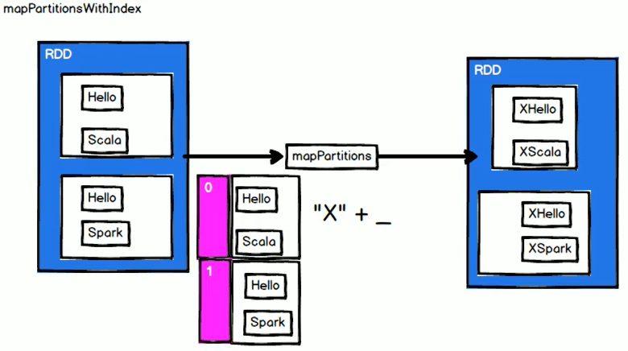
executor和driver
driver要往executor上传数据，只能传可序列化的
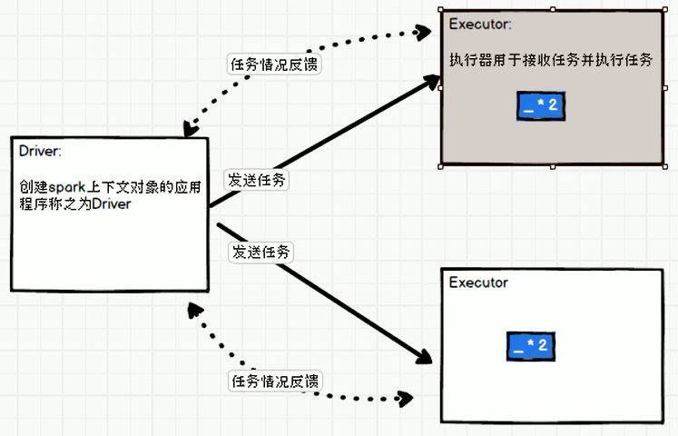
flatMap(func) 案例
作用：类似于map，但是每一个输入元素可以被映射为0或多个输出元素（所以方法应该返回一个序列，而不是单一元素）
需求：创建一个元素为1-4的RDD，运用flatMap创建一个新的RDD，将所有数字分开
package com.swenchao.spark
import org.apache.spark.rdd.RDD
import org.apache.spark.{SparkConf, SparkContext}
/**
* @Author: Swenchao
* @Date: 2020/9/24 下午 08:57
* @Func: 将所有数字分开（flatMap）
*/
object Spark05_Oper4 {
def main(args: Array[String]): Unit = {
val conf: SparkConf = new SparkConf().setMaster("local[*]").setAppName("WordCount")
// 创建Spark上下文对象
val sc: SparkContext = new SparkContext(conf)
// map算子
val listRDD: RDD[List[Int]] = sc.makeRDD(Array(List(1, 2), List(3, 4)))
// flatMap拆成 1 2 3 4
val flatMapRDD: RDD[Int] = listRDD.flatMap(datas => datas)
// 打印最终结果
flatMapRDD.collect().foreach(println)
// 关闭资源
sc.stop()
}
}map()和mapPartition()的区别
- map()：每次处理一条数据。
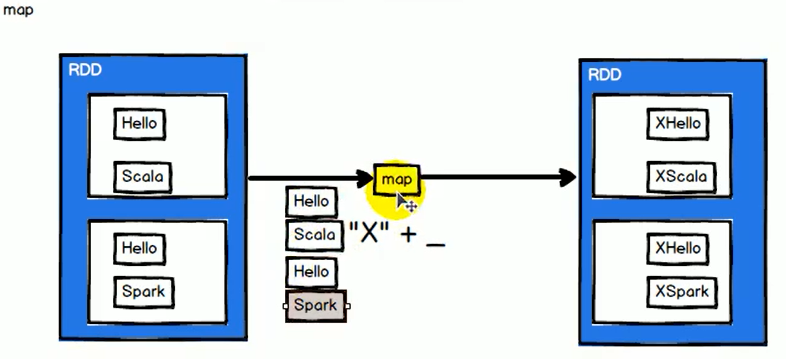
其中有几个数据就会执行几次 “X” + _ 操作（4次）
- mapPartition()：每次处理一个分区的数据，这个分区的数据处理完后，原RDD中分区的数据才能释放，可能导致OOM（内存溢出）。
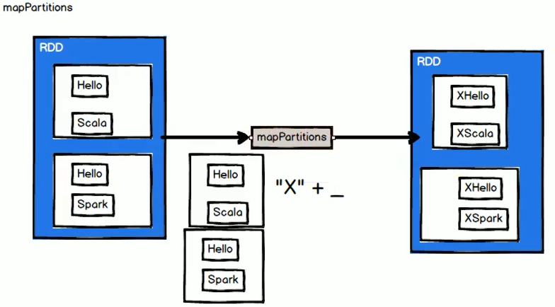
- 开发指导：当内存空间较大的时候建议使用mapPartition()，以提高处理效率。
glom案例
作用：将每一个分区形成一个数组，形成新的RDD类型时RDD[Array[T]]
需求：创建一个4个分区的RDD，并将每个分区的数据放到一个数组
package com.swenchao.spark
import org.apache.spark.rdd.RDD
import org.apache.spark.{SparkConf, SparkContext}
/**
* @Author: Swenchao
* @Date: 2020/9/24 下午 08:57
* @Func: 所有元素乘以2（mapPartitionsWithIndex）
*/
object Spark06_Oper5 {
def main(args: Array[String]): Unit = {
val conf: SparkConf = new SparkConf().setMaster("local[*]").setAppName("WordCount")
// 创建Spark上下文对象
val sc: SparkContext = new SparkContext(conf)
val listRDD: RDD[Int] = sc.makeRDD(1 to 16, 5)
// 将一个分区数据放到一个数组中
val glomRDD: RDD[Array[Int]] = listRDD.glom()
// 打印最终结果
glomRDD.collect().foreach(array => {
println(array.mkString(","))
})
// 关闭资源
sc.stop()
}
}将每一个分区形成一个数组，会有很多操作会很方便（求最大（小）值、求和等等）。
groupBy(func)案例
作用：分组，按照传入函数的返回值进行分组。将相同的key对应的值放入一个迭代器。
需求：创建一个RDD，按照元素模以2的值进行分组。
package com.swenchao.spark
import org.apache.spark.rdd.RDD
import org.apache.spark.{SparkConf, SparkContext}
/**
* @Author: Swenchao
* @Date: 2020/9/24 下午 08:57
* @Func: groupBy
*/
object Spark07_Oper6 {
def main(args: Array[String]): Unit = {
val conf: SparkConf = new SparkConf().setMaster("local[*]").setAppName("WordCount")
// 创建Spark上下文对象
val sc: SparkContext = new SparkContext(conf)
// 生成数据
val listRDD: RDD[Int] = sc.makeRDD(1 to 4)
// 将一个分区数据放到一个数组中（分组后形成了对偶元组（k-v），k表示分组key，v表示分组数据集合）
// (0,CompactBuffer(2, 4))
// (1,CompactBuffer(1, 3))
// 可见其中Int是分组号，Iterable[Int]是组内元素
val groupByRDD: RDD[(Int, Iterable[Int])] = listRDD.groupBy(i => i % 2)
// 打印最终结果
groupByRDD.collect().foreach(println)
// 关闭资源
sc.stop()
}
}filter(func) 案例
作用：过滤。返回一个新的RDD，该RDD由经过func函数计算后返回值为true的输入元素组成。
需求：创建一个RDD（1 2 3 4），过滤出一个新RDD（%2为0的）
package com.swenchao.spark
import org.apache.spark.rdd.RDD
import org.apache.spark.{SparkConf, SparkContext}
/**
* @Author: Swenchao
* @Date: 2020/9/24 下午 08:57
* @Func: filter
*/
object Spark08_Oper7 {
def main(args: Array[String]): Unit = {
val conf: SparkConf = new SparkConf().setMaster("local[*]").setAppName("WordCount")
// 创建Spark上下文对象
val sc: SparkContext = new SparkContext(conf)
// 生成数据
val listRDD: RDD[Int] = sc.makeRDD(1 to 4)
// %2余数为0留下，余数不为0拿走
val filterRDD: RDD[Int] = listRDD.filter(x => x % 2 == 0)
// 打印最终结果
filterRDD.collect().foreach(println)
// 关闭资源
sc.stop()
}
}sample(withReplacement, fraction, seed) 案例
作用：以指定的随机种子随机抽样出数量为fraction的数据，withReplacement表示是抽出的数据是否放回，true为有放回的抽样，false为无放回的抽样；seed用于指定随机数生成器种子。
需求：创建一个RDD（1-10），从中选择放回和不放回抽样
package com.swenchao.spark
import org.apache.spark.rdd.RDD
import org.apache.spark.{SparkConf, SparkContext}
/**
* @Author: Swenchao
* @Date: 2020/9/24 下午 08:57
* @Func: sample
*/
object Spark09_Oper8 {
def main(args: Array[String]): Unit = {
val conf: SparkConf = new SparkConf().setMaster("local[*]").setAppName("WordCount")
// 创建Spark上下文对象
val sc: SparkContext = new SparkContext(conf)
// 生成数据
val listRDD: RDD[Int] = sc.makeRDD(1 to 10)
// 从指定数据集合中进行抽样处理，根据不同的算法进行抽样
// 有放回
// val sampleRDD: RDD[Int] = listRDD.sample(false, 0.4, 1)
// 无放回
val sampleRDD: RDD[Int] = listRDD.sample(true, 4, 1)
// 打印最终结果
sampleRDD.collect().foreach(println)
// 关闭资源
sc.stop()
}
}distinct([numTasks])) 案例
- 作用：对源RDD进行去重后返回一个新的RDD。默认情况下，只有8个并行任务来操作，但是可以传入一个可选的numTasks（numPartitions）参数改变它。
有没有shuffle区别
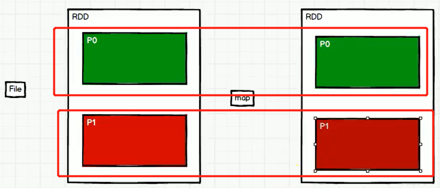
从中可以看出如果中间是map，没有shuffle的过程，那么其中两个红框内分区就可以看成一个整体，p0也就不需要等待p1完成再接着执行。
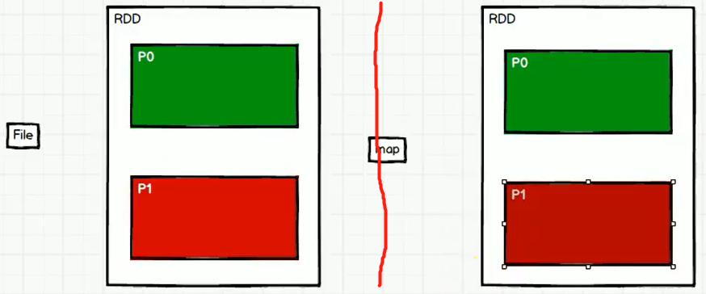
若其中map换成distinct，则其将会分成前后两个过程。在左边p0分区执行完后，要等左边p1分区执行完才能向后继续执行。
这就出现了一个分区一个任务，一个任务会被分配到Executor中执行，所以此时 numTasks 和 numPartitions 是一样的。
- 需求：创建一个RDD，使用distinct()对其去重。
package com.swenchao.spark
import org.apache.spark.rdd.RDD
import org.apache.spark.{SparkConf, SparkContext}
/**
* @Author: Swenchao
* @Date: 2020/9/24 下午 08:57
* @Func: distinct
*/
object Spark10_Oper9 {
def main(args: Array[String]): Unit = {
val conf: SparkConf = new SparkConf().setMaster("local[*]").setAppName("WordCount")
// 创建Spark上下文对象
val sc: SparkContext = new SparkContext(conf)
// 生成数据
val listRDD: RDD[Int] = sc.makeRDD(List(1,2,1,5,2,9,6,1))
// val distinctRDD: RDD[Int] = listRDD.distinct()
// 重组后的数据分成两个分区保存
val distinctRDD: RDD[Int] = listRDD.distinct(2)
// 打印最终结果
// distinctRDD.collect().foreach(println)
// 保存文件
distinctRDD.saveAsTextFile("output")
// 关闭资源
sc.stop()
}
}执行上面程序不论是写入文件还是输出，会发现原来的顺序都被打乱了，这就说明经过了一个重排序的阶段（shuffle）。
将RDD中一个分区的数据打乱（其中在一块的不再在一块）重组到其他不同的分区的操作，称之为shuffle操作。
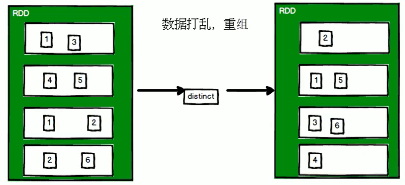
若shuffle过程未做完，整个过程就不会往后走，即：
当前两个分区（{1，3}， {4，5}）走完后，不能继续往后走，必须得等后面两个（{1，2}， {2，6}）一块在做完才能继续（因为不进行完并不知道后面有没有重复）
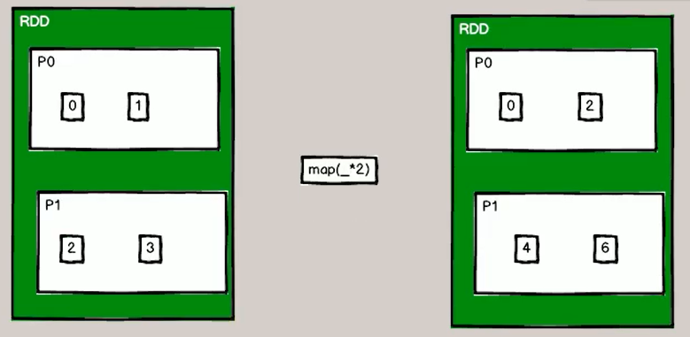
上面是无shuffle过程，其中p0分区执行完并不需要等p1分区，因为两个互不相干
Spark中所有转换算子没有shuffle的算子，性能比较快
coalesce(numPartitions) 案例
作用：缩减分区数，用于大数据集过滤后，提高小数据集的执行效率。
需求：创建一个4个分区的RDD，对其缩减分区
package com.swenchao.spark
import org.apache.spark.rdd.RDD
import org.apache.spark.{SparkConf, SparkContext}
/**
* @Author: Swenchao
* @Date: 2020/9/24 下午 08:57
* @Func: coalesce
*/
object Spark11_Oper10 {
def main(args: Array[String]): Unit = {
val conf: SparkConf = new SparkConf().setMaster("local[*]").setAppName("WordCount")
// 创建Spark上下文对象
val sc: SparkContext = new SparkContext(conf)
// 生成数据
val listRDD: RDD[Int] = sc.makeRDD(1 to 16, 4)
// 缩减分区数量（可以简单理解为合并分区——最后两个，并未打乱顺序）
println("缩减分区前：" + listRDD.partitions.size)
val coalesceRDD: RDD[Int] = listRDD.coalesce(3)
println("缩减分区后：" + coalesceRDD.partitions.size)
// 保存文件
coalesceRDD.saveAsTextFile("output")
// 关闭资源
sc.stop()
}
}repartition(numPartitions) 案例
作用：根据分区数，重新通过网络随机洗牌所有数据。
需求：创建一个4个分区的RDD，对其重新分区
scala> val rdd = sc.parallelize(1 to 16, 4)
scala> rdd.collect
——>
res0: Array[Int] = Array(1, 2, 3, 4, 5, 6, 7, 8, 9, 10, 11, 12, 13, 14, 15, 16)
scala> var rerdd = rdd.repartition(2)
scala> rerdd.collect
——>
res1: Array[Int] = Array(1, 3, 5, 7, 9, 11, 13, 15, 2, 4, 6, 8, 10, 12, 14, 16)
# 可见已经分成了两组
scala> rerdd.glom.collect
——>
res2: Array[Array[Int]] = Array(Array(1, 3, 5, 7, 9, 11, 13, 15), Array(2, 4, 6, 8, 10, 12, 14, 16))coalesce和repartition的区别
coalesce重新分区，可以选择是否进行shuffle过程。由参数shuffle: Boolean = false/true决定。
repartition实际上是调用的coalesce，默认是进行shuffle的。源码如下：
def repartition(numPartitions: Int)(implicit ord: Ordering[T] = null): RDD[T] = withScope {
coalesce(numPartitions, shuffle = true)
}def coalesce(numPartitions: Int, shuffle: Boolean = false,
partitionCoalescer: Option[PartitionCoalescer] = Option.empty)
(implicit ord: Ordering[T] = null)
: RDD[T] = withScope {
...
}sortBy(func,[ascending], [numTasks]) 案例
作用；使用func先对数据进行处理，按照处理后的数据比较结果排序，默认为正序。
需求：创建一个RDD，按照不同的规则进行排序
（1）创建一个RDD
scala> val rdd = sc.parallelize(List(2,1,3,4))
——>
rdd: org.apache.spark.rdd.RDD[Int] = ParallelCollectionRDD[6] at parallelize at <console>:24（2）按照自身大小排序（顺序）
scala> rdd.sortBy(x => x).collect()
——>
res3: Array[Int] = Array(1, 2, 3, 4)按照自身大小排序（倒序）
scala> rdd.sortBy(x => x, false).collect()
——>
res4: Array[Int] = Array(4, 3, 2, 1)（3）按照与3余数的大小排序
scala> rdd.sortBy(x => x%3).collect()
——>
res5: Array[Int] = Array(3, 4, 1, 2)pipe(command, [envVars]) 案例
作用：管道，针对每个分区，都执行一个shell脚本，返回输出的RDD。
注意：脚本需要放在Worker节点可以访问到的位置需求：编写一个脚本，使用管道将脚本作用于RDD上。
（1）编写一个脚本
Shell脚本
#!/bin/sh
echo "AA"
while read LINE; do
echo ">>>"${LINE}
done双Value类型交互
union(otherDataset) 案例
作用：对源RDD和参数RDD求并集后返回一个新的RDD
需求：创建两个RDD，求并集
（1）创建第一个RDD
scala> val rdd1 = sc.parallelize(1 to 5)
——>
rdd1: org.apache.spark.rdd.RDD[Int] = ParallelCollectionRDD[2] at parallelize at <console>:24（2）创建第二个RDD
scala> val rdd2 = sc.parallelize(5 to 10)
——>
rdd2: org.apache.spark.rdd.RDD[Int] = ParallelCollectionRDD[3] at parallelize at <console>:24（3）计算两个RDD的并集
scala> val rdd3 = rdd1.union(rdd2)
——>
rdd3: org.apache.spark.rdd.RDD[Int] = UnionRDD[4] at union at <console>:28（4）打印并集结果
scala> rdd3.collect
——>
res0: Array[Int] = Array(1, 2, 3, 4, 5, 5, 6, 7, 8, 9, 10)subtract (otherDataset) 案例
作用：计算差的一种函数，去除两个RDD中相同的元素，不同的RDD将保留下来
需求：创建两个RDD，求第一个RDD与第二个RDD的差集
（1）创建第一个RDD
scala> val rdd = sc.parallelize(3 to 8)
——>
rdd: org.apache.spark.rdd.RDD[Int] = ParallelCollectionRDD[2] at parallelize at <console>:24（2）创建第二个RDD
scala> val rdd1 = sc.parallelize(1 to 5)
——>
rdd1: org.apache.spark.rdd.RDD[Int] = ParallelCollectionRDD[3] at parallelize at <console>:24（3）计算第一个RDD与第二个RDD的差集并打印
scala> rdd.subtract(rdd1).collect()
——>
res0: Array[Int] = Array(6, 7, 8)intersection(otherDataset) 案例
作用：对源RDD和参数RDD求交集后返回一个新的RDD
需求：创建两个RDD，求两个RDD的交集
（1）创建第一个RDD
scala> val rdd1 = sc.parallelize(1 to 7)
——>
rdd1: org.apache.spark.rdd.RDD[Int] = ParallelCollectionRDD[26] at parallelize at <console>:24（2）创建第二个RDD
scala> val rdd2 = sc.parallelize(5 to 10)
——>
rdd2: org.apache.spark.rdd.RDD[Int] = ParallelCollectionRDD[27] at parallelize at <console>:24（3）计算两个RDD的交集
scala> val rdd3 = rdd1.intersection(rdd2)
——>
rdd3: org.apache.spark.rdd.RDD[Int] = MapPartitionsRDD[33] at intersection at <console>:28（4）打印计算结果
scala> rdd3.collect()
——>
res0: Array[Int] = Array(5, 6, 7)cartesian(otherDataset) 案例
作用：笛卡尔积（尽量避免使用）
需求：创建两个RDD，计算两个RDD的笛卡尔积
（1）创建第一个RDD
scala> val rdd1 = sc.parallelize(1 to 3)
——>
rdd1: org.apache.spark.rdd.RDD[Int] = ParallelCollectionRDD[47] at parallelize at <console>:24（2）创建第二个RDD
scala> val rdd2 = sc.parallelize(2 to 5)
——>
rdd2: org.apache.spark.rdd.RDD[Int] = ParallelCollectionRDD[48] at parallelize at <console>:24（3）计算两个RDD的笛卡尔积并打印
scala> rdd1.cartesian(rdd2).collect()
——>
res1: Array[(Int, Int)] = Array((1,2), (1,3), (1,4), (1,5), (2,2), (2,3), (2,4), (2,5), (3,2), (3,3), (3,4), (3,5))zip(otherDataset)案例
作用：将两个RDD组合成Key/Value形式的RDD,这里默认两个RDD的partition数量以及元素数量都相同，否则会抛出异常。
需求：创建两个RDD，并将两个RDD组合到一起形成一个(k,v)RDD
（1）创建第一个RDD
scala> val rdd1 = sc.parallelize(Array(1,2,3),3)
——>
rdd1: org.apache.spark.rdd.RDD[Int] = ParallelCollectionRDD[1] at parallelize at <console>:24（2）创建第二个RDD（与1分区数相同）
scala> val rdd2 = sc.parallelize(Array("a","b","c"),3)
——>
rdd2: org.apache.spark.rdd.RDD[String] = ParallelCollectionRDD[2] at parallelize at <console>:24（3）第一个RDD组合第二个RDD并打印
scala> rdd1.zip(rdd2).collect
——>
res2: Array[(Int, String)] = Array((1,a), (2,b), (3,c))（4）第二个RDD组合第一个RDD并打印
scala> rdd2.zip(rdd1).collect
——>
res2: Array[(String, Int)] = Array((a,1), (b,2), (c,3))（5）创建第三个RDD（与1,2分区数不同）
scala> val rdd3 = sc.parallelize(Array("a","b","c"),2)
——>
rdd3: org.apache.spark.rdd.RDD[String] = ParallelCollectionRDD[5] at parallelize at <console>:24（6）第一个RDD组合第三个RDD并打印
scala> rdd1.zip(rdd3).collect报错了
java.lang.IllegalArgumentException: Can't zip RDDs with unequal numbers of partitions: List(3, 2)同理，若 val rdd3 = sc.parallelize(Array(“a”,”b”,”c”,”d”),3) 也会报错
Can only zip RDDs with same number of elements in each partitionKey-Value类型
partitionBy案例
作用：对 pairRDD 进行分区操作，如果原有的 partionRDD 和现有的 partionRDD 是一致的话就不进行分区， 否则会生成 ShuffleRDD，即会产生 shuffle 过程。
需求：创建一个4个分区的RDD，对其重新分区
（1）创建一个RDD
scala> val rdd = sc.parallelize(Array((1,"aaa"),(2,"bbb"),(3,"ccc"),(4,"ddd")),4)
——>
rdd: org.apache.spark.rdd.RDD[(Int, String)] = ParallelCollectionRDD[0] at parallelize at <console>:24（2）查看RDD的分区数
scala> rdd.partitions.size
——>
res1: Int = 4（3）对RDD重新分区
scala> var rdd2 = rdd.partitionBy(new org.apache.spark.HashPartitioner(2))
——>
rdd2: org.apache.spark.rdd.RDD[(Int, String)] = ShuffledRDD[1] at partitionBy at <console>:26（4）查看新RDD的分区数
scala> rdd2.partitions.size
——>
res2: Int = 2groupByKey案例
作用：groupByKey也是对每个key进行操作，但只生成一个sequence。
需求：创建一个pairRDD，将相同key对应值聚合到一个sequence中，并计算相同key对应值的相加结果。
（1）创建一个pairRDD
scala> val words = Array("one", "two", "two", "three", "three", "three")
——>
words: Array[String] = Array(one, two, two, three, three, three)scala> val wordPairsRDD = sc.parallelize(words).map(word => (word, 1))
——>
wordPairsRDD: org.apache.spark.rdd.RDD[(String, Int)] = MapPartitionsRDD[4] at map at <console>:26（2）将相同key对应值聚合到一个sequence中
scala> val group = wordPairsRDD.groupByKey()
——>
group: org.apache.spark.rdd.RDD[(String, Iterable[Int])] = ShuffledRDD[5] at groupByKey at <console>:28（3）打印结果
scala> group.collect()
——>
res1: Array[(String, Iterable[Int])] = Array((two,CompactBuffer(1, 1)), (one,CompactBuffer(1)), (three,CompactBuffer(1, 1, 1)))（4）计算相同key对应值的相加结果
scala> group.map(t => (t._1, t._2.sum))
——>
res2: org.apache.spark.rdd.RDD[(String, Int)] = MapPartitionsRDD[6] at map at <console>:31（5）打印结果
scala> res2.collect()
res3: Array[(String, Int)] = Array((two,2), (one,1), (three,3))reduceByKey(func, [numTasks]) 案例
在一个(K,V)的RDD上调用，返回一个(K,V)的RDD，使用指定的reduce函数，将相同key的值聚合到一起，reduce任务的个数可以通过第二个可选的参数来设置。
需求：创建一个pairRDD，计算相同key对应值的相加结果
（1）创建一个pairRDD
scala> val rdd = sc.parallelize(List(("female",1),("male",5),("female",5),("male",2)))
——>
rdd: org.apache.spark.rdd.RDD[(String, Int)] = ParallelCollectionRDD[46] at parallelize at <console>:24（2）计算相同key对应值的相加结果
scala> val reduce = rdd.reduceByKey((x,y) => x+y)
——>
reduce: org.apache.spark.rdd.RDD[(String, Int)] = ShuffledRDD[47] at reduceByKey at <console>:26（3）打印结果
scala> reduce.collect()
——>
res1: Array[(String, Int)] = Array((female,6), (male,7))reduceByKey和groupByKey的区别
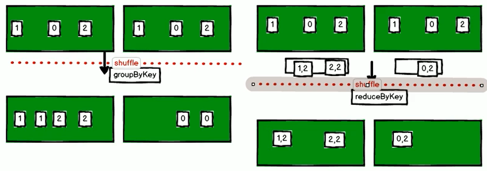
从图中可以看出，groupByKey 本来有6个数据（上面的绿框），处理之后依然有6个数据（下面的绿框），说明其在中间有一次shuffle过程；而 reduceByKey 本来有6个数据（上面的绿框），处理之后依然有3个数据（下面的绿框），说明在中间shuffle过程之前有一次合并的过程（预聚合）
reduceByKey：按照key进行聚合，在shuffle之前有combine（预聚合）操作，返回结果是RDD[k,v].
groupByKey：按照key进行分组，直接进行shuffle。
开发指导：reduceByKey比groupByKey，建议使用。但是需要注意是否会影响业务逻辑。
注：如果shuffle过程中有预聚合操作，性能可以得到提高
aggregateByKey案例
参数：(zeroValue:U,[partitioner: Partitioner]) (seqOp: (U, V) => U,combOp: (U, U) => U)
zeroValue：默认值
seqOp：分区内运算规则
combOp：分区间分区规则
作用：在kv对的RDD中，按key将value进行分组合并，合并时，将每个value和初始值作为seq函数的参数，进行计算，返回的结果作为一个新的kv对，然后再将结果按照key进行合并，最后将每个分组的value传递给combine函数进行计算（先将前两个value进行计算，将返回结果和下一个value传给combine函数，以此类推），将key与计算结果作为一个新的kv对输出。
参数描述：
（1）zeroValue：给每一个分区中的每一个key一个初始值；
（2）seqOp：函数用于在每一个分区中用初始值逐步迭代value；
（3）combOp：函数用于合并每个分区中的结果。
需求：创建一个pairRDD，取出每个分区相同key对应值的最大值，然后相加
需求分析
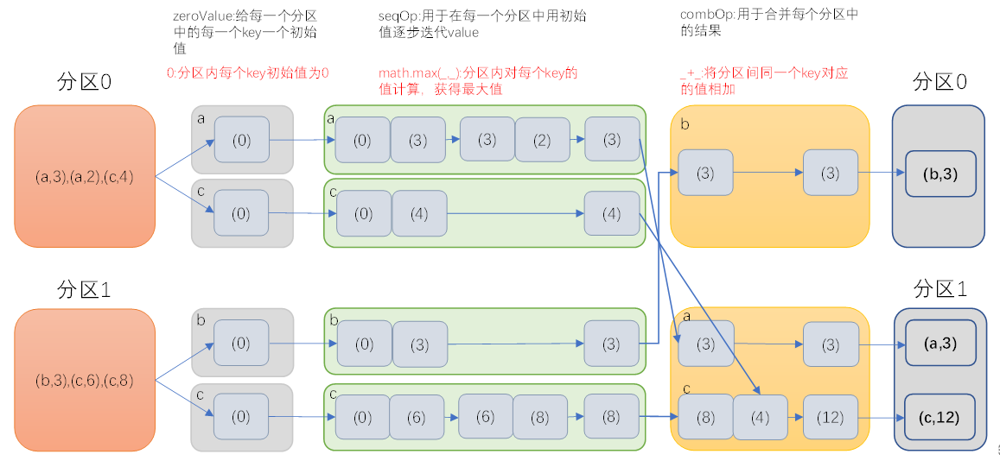
package com.swenchao.spark
import org.apache.spark.rdd.RDD
import org.apache.spark.{Partitioner, SparkConf, SparkContext}
/**
* @Author: Swenchao
* @Date: 2020/9/29 下午 08:57
* @Func: aggregateByKey案例
*/
object Spark13_Oper12 {
def main(args: Array[String]): Unit = {
val conf: SparkConf = new SparkConf().setMaster("local[*]").setAppName("WordCount")
// 创建Spark上下文对象
val sc: SparkContext = new SparkContext(conf)
// 生成数据
val aggRDD: RDD[(String, Int)] = sc.parallelize(List(("a", 3), ("a", 2), ("c", 4), ("b", 3), ("c", 6), ("c", 8)), 2)
// 查看分区
// val glomRDD: RDD[Array[(String, Int)]] = aggRDD.glom()
//
// glomRDD.collect().foreach(s
// => {println(s.mkString(","))}
// )
// 取出每个分区相同key对应值的最大值，然后相加
val resRDD: RDD[(String, Int)] = aggRDD.aggregateByKey(0)(math.max(_, _), _ + _)
resRDD.collect().foreach(println)
}
}foldByKey案例
参数：(zeroValue: V)(func: (V, V) => V): RDD[(K, V)]
作用：aggregateByKey的简化操作，seqop和combop相同
需求：创建一个pairRDD，计算相同key对应值的相加结果
package com.swenchao.spark
import org.apache.spark.rdd.RDD
import org.apache.spark.{SparkConf, SparkContext}
/**
* @Author: Swenchao
* @Date: 2020/9/29 下午 08:57
* @Func: foldByKey案例
*/
object Spark14_Oper13 {
def main(args: Array[String]): Unit = {
val conf: SparkConf = new SparkConf().setMaster("local[*]").setAppName("WordCount")
// 创建Spark上下文对象
val sc: SparkContext = new SparkContext(conf)
// 生成数据
val foldRDD: RDD[(Int, Int)] = sc.parallelize(List((1, 3), (1, 2), (1, 4), (2, 3), (3, 6), (3, 8)), 3)
// 查看分区
// val glomRDD: RDD[Array[(String, Int)]] = aggRDD.glom()
//
// glomRDD.collect().foreach(s
// => {println(s.mkString(","))}
// )
// 相加
val resRDD: RDD[(Int, Int)] = foldRDD.foldByKey(0)(_ + _)
resRDD.collect().foreach(println)
}
}
combineByKey[C] 案例
参数：(createCombiner: V => C, mergeValue: (C, V) => C, mergeCombiners: (C, C) => C)
作用：对相同K，把V合并成一个集合。
参数描述：
（1）createCombiner: combineByKey() 会遍历分区中的所有元素，因此每个元素的键要么还没有遇到过，要么就和之前的某个元素的键相同。如果这是一个新的元素,combineByKey()会使用一个叫作createCombiner()的函数来创建那个键对应的累加器的初始值
（2）mergeValue: 如果这是一个在处理当前分区之前已经遇到的键，它会使用mergeValue()方法将该键的累加器对应的当前值与这个新的值进行合并
（3）mergeCombiners: 由于每个分区都是独立处理的， 因此对于同一个键可以有多个累加器。如果有两个或者更多的分区都有对应同一个键的累加器， 就需要使用用户提供的 mergeCombiners() 方法将各个分区的结果进行合并。
需求：创建一个pairRDD，根据key计算每种key的均值。（先计算每个key出现的次数以及可以对应值的总和，再相除得到结果）
需求分析：
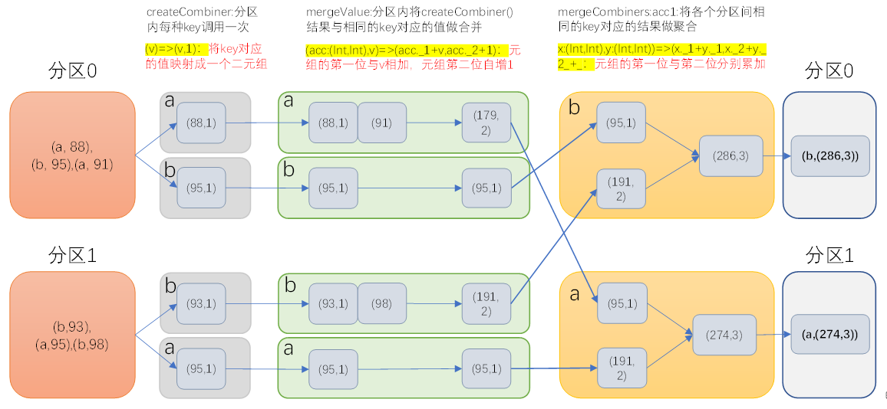
package com.swenchao.spark
import org.apache.spark.rdd.RDD
import org.apache.spark.{SparkConf, SparkContext}
/**
* @Author: Swenchao
* @Date: 2020/9/29 下午 08:57
* @Func: combineByKey案例
*/
object Spark15_Oper14 {
def main(args: Array[String]): Unit = {
val conf: SparkConf = new SparkConf().setMaster("local[*]").setAppName("WordCount")
// 创建Spark上下文对象
val sc: SparkContext = new SparkContext(conf)
// 生成数据
val combineRDD: RDD[(String, Int)] = sc.parallelize(Array(("a", 88), ("b", 95), ("a", 91), ("b", 93), ("a", 95), ("b", 98)), 2)
// 相加
val sumRDD: RDD[(String, (Int, Int))] = combineRDD.combineByKey((_, 1), (acc: (Int, Int), v) => (acc._1 + v, acc._2 + 1), (acc1: (Int, Int), acc2: (Int, Int)) => (acc1._1 + acc2._1, acc1._2 + acc2._2))
sumRDD.collect().foreach(println)
// 求平均值
val resRDD: RDD[(String, Double)] = sumRDD.map { case (key, value) => (key, value._1 / value._2.toDouble) }
resRDD.collect().foreach(println)
}
}sortByKey([ascending], [numTasks]) 案例
作用：在一个(K,V)的RDD上调用，K必须实现Ordered接口，返回一个按照key进行排序的(K,V)的RDD
需求：创建一个pairRDD，按照key的正序和倒序进行排序
（1）创建一个pairRDD
scala> val rdd = sc.parallelize(Array((3,"aa"),(6,"cc"),(2,"bb"),(1,"dd")))
——>
rdd: org.apache.spark.rdd.RDD[(Int, String)] = ParallelCollectionRDD[14] at parallelize at <console>:24（2）按照key的正序
scala> rdd.sortByKey(true).collect()
——>
res1: Array[(Int, String)] = Array((1,dd), (2,bb), (3,aa), (6,cc))（3）按照key的倒序
scala> rdd.sortByKey(false).collect()
——>
res2: Array[(Int, String)] = Array((6,cc), (3,aa), (2,bb), (1,dd))mapValues案例
针对于(K,V)形式的类型只对V进行操作
需求：创建一个pairRDD，并将value添加字符串”|||”
（1）创建一个pairRDD
scala> val rdd3 = sc.parallelize(Array((1,"a"),(1,"d"),(2,"b"),(3,"c")))
——>
rdd3: org.apache.spark.rdd.RDD[(Int, String)] = ParallelCollectionRDD[67] at parallelize at <console>:24（2）对value添加字符串”|||”
scala> rdd3.mapValues(_+"|||").collect()
——>
res4: Array[(Int, String)] = Array((1,a|||), (1,d|||), (2,b|||), (3,c|||))join(otherDataset, [numTasks]) 案例
作用：在类型为(K,V)和(K,W)的RDD上调用，返回一个相同key对应的所有元素对在一起的(K,(V,W))的RDD
需求：创建两个pairRDD，并将key相同的数据聚合到一个元组。
（1）创建第一个pairRDD
scala> val rdd = sc.parallelize(Array((1,"a"),(2,"b"),(3,"c")))
——>
rdd: org.apache.spark.rdd.RDD[(Int, String)] = ParallelCollectionRDD[32] at parallelize at <console>:24（2）创建第二个pairRDD
scala> val rdd1 = sc.parallelize(Array((1,4),(2,5),(3,6)))
——>
rdd1: org.apache.spark.rdd.RDD[(Int, Int)] = ParallelCollectionRDD[33] at parallelize at <console>:24（3）join操作并打印结果
scala> rdd.join(rdd1).collect()
——>
res5: Array[(Int, (String, Int))] = Array((1,(a,4)), (2,(b,5)), (3,(c,6)))cogroup(otherDataset, [numTasks]) 案例
作用：在类型为(K,V)和(K,W)的RDD上调用，返回一个(K,(Iterable<V>,Iterable<W>))类型的RDD
需求：创建两个pairRDD，并将key相同的数据聚合到一个迭代器。
（1）创建第一个pairRDD
scala> val rdd = sc.parallelize(Array((1,"a"),(2,"b"),(3,"c")))
——>
rdd: org.apache.spark.rdd.RDD[(Int, String)] = ParallelCollectionRDD[37] at parallelize at <console>:24（2）创建第二个pairRDD
scala> val rdd1 = sc.parallelize(Array((1,4),(2,5),(3,6)))
——>
rdd1: org.apache.spark.rdd.RDD[(Int, Int)] = ParallelCollectionRDD[38] at parallelize at <console>:24（3）cogroup两个RDD并打印结果
scala> rdd.cogroup(rdd1).collect()
——>
res6: Array[(Int, (Iterable[String], Iterable[Int]))] = Array((1,(CompactBuffer(a),CompactBuffer(4))), (2,(CompactBuffer(b),CompactBuffer(5))), (3,(CompactBuffer(c),CompactBuffer(6))))案例实操
- 数据结构：时间戳，省份，城市，用户，广告，中间字段使用空格分割。
样本如下：
1516609143867 6 7 64 16
1516609143869 9 4 75 18
1516609143869 1 7 87 12
...需求：统计出每一个省份广告被点击次数的TOP3
实现过程：
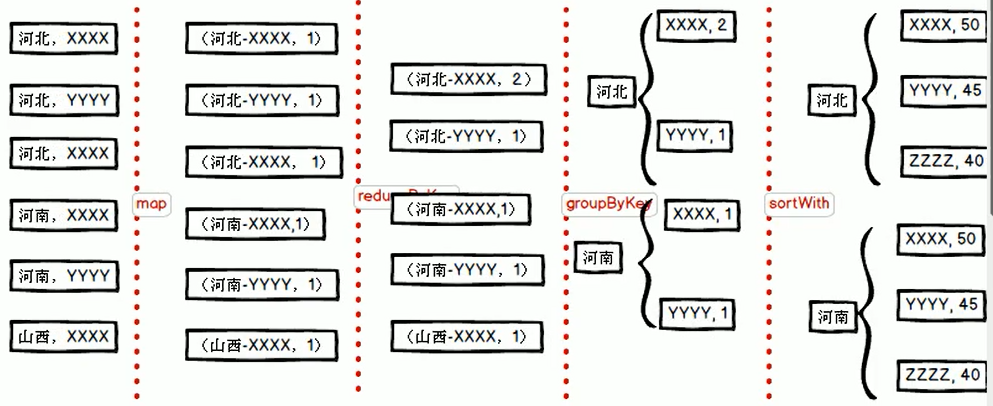
package com.swenchao.spark
import org.apache.spark.rdd.RDD
import org.apache.spark.{SparkConf, SparkContext}
/**
* @Author: Swenchao
* @Date: 2020/9/22 下午 10:14
* @Func: 统计出每一个省份广告被点击次数的TOP3
*/
object adTop3 {
def main(args: Array[String]): Unit = {
//创建conf对象
// app id对应一个应用名称
val config: SparkConf = new SparkConf().setMaster("local[*]").setAppName("AdTop3")
// 创建上下文对象
val sc = new SparkContext(config)
// 读取文件生成RDD
val lines: RDD[String] = sc.textFile("in/agent.log")
// 分解成：((Province,AD),1)
// 原来样式：时间戳 省份 城市 用户 广告
val provinceAD: RDD[((String, String), Int)] = lines.map(x => {
val details: Array[String] = x.split(" ")
((details(1), details(4)), 1)
})
// 检验样式：((5,10),1)
// provinceAD.foreach(println)
// 点击次数相加
val sumProvinceAD: RDD[((String, String), Int)] = provinceAD.reduceByKey((x, y) => x + y)
// sumProvinceAD.foreach(println)
// 改变样式 (Province,(AD,1))
val provinceToADSum: RDD[(String, (String, Int))] = sumProvinceAD.map(x => {
(x._1._1, (x._1._2, x._2))
})
// provinceToADSum.foreach(x=>println(x._1))
// 根据省份分组
val provinceSum: RDD[(String, Iterable[(String, Int)])] = provinceToADSum.groupByKey()
// provinceSum.foreach(println)
// 排序取前三
val provinceADTop3: RDD[(String, List[(String, Int)])] = provinceSum.mapValues(x => {
x.toList.sortWith((x, y) => x._2 < y._2).take(3)
})
provinceADTop3.foreach(println)
// provinceADTop3.saveAsTextFile("output")
//9.关闭与spark的连接
sc.stop()
}
}
Action
reduce(func)案例
作用：通过func函数聚集RDD中的所有元素，先聚合分区内数据，再聚合分区间数据。
需求：创建一个RDD，将所有元素聚合得到结果。
（1）创建一个RDD[Int]
scala> val rdd1 = sc.makeRDD(1 to 10,2)
——>
rdd1: org.apache.spark.rdd.RDD[Int] = ParallelCollectionRDD[85] at makeRDD at <console>:24（2）聚合RDD[Int]所有元素
scala> rdd1.reduce(_+_)
——>
res1: Int = 55（3）创建一个RDD[String]
scala> val rdd2 = sc.makeRDD(Array(("a",1),("a",3),("c",3),("d",5)))
——>
rdd2: org.apache.spark.rdd.RDD[(String, Int)] = ParallelCollectionRDD[86] at makeRDD at <console>:24（4）聚合RDD[String]所有数据
scala> rdd2.reduce((x,y)=>(x._1 + y._1,x._2 + y._2))
——>
res2: (String, Int) = (adca,12)collect()案例
作用：在驱动程序中，以数组的形式返回数据集的所有元素。
需求：创建一个RDD，并将RDD内容收集到Driver端打印
（1）创建一个RDD
scala> val rdd = sc.parallelize(1 to 10)
——>
rdd: org.apache.spark.rdd.RDD[Int] = ParallelCollectionRDD[0] at parallelize at <console>:24（2）将结果收集到Driver端
scala> rdd.collect
——>
res3: Array[Int] = Array(1, 2, 3, 4, 5, 6, 7, 8, 9, 10) count()案例
作用：返回RDD中元素的个数
需求：创建一个RDD，统计该RDD的条数
（1）创建一个RDD
scala> val rdd = sc.parallelize(1 to 10)
——>
rdd: org.apache.spark.rdd.RDD[Int] = ParallelCollectionRDD[0] at parallelize at <console>:24（2）统计该RDD的条数
scala> rdd.count
——>
res1: Long = 10first()案例
作用：返回RDD中的第一个元素
需求：创建一个RDD，返回该RDD中的第一个元素
（1）创建一个RDD
scala> val rdd = sc.parallelize(1 to 10)
——>
rdd: org.apache.spark.rdd.RDD[Int] = ParallelCollectionRDD[0] at parallelize at <console>:24（2）统计该RDD的条数
scala> rdd.first
——>
res2: Int = 1take(n)案例
作用：返回一个由RDD的前n个元素组成的数组
需求：创建一个RDD，统计该RDD的条数
（1）创建一个RDD
scala> val rdd = sc.parallelize(Array(2,5,4,6,8,3))
——>
rdd: org.apache.spark.rdd.RDD[Int] = ParallelCollectionRDD[2] at parallelize at <console>:24（2）统计该RDD的条数
scala> rdd.take(3)
——>
res3: Array[Int] = Array(2, 5, 4)takeOrdered(n)案例
作用：返回该RDD排序后的前n个元素组成的数组
需求：创建一个RDD，统计该RDD的条数
（1）创建一个RDD
scala> val rdd = sc.parallelize(Array(2,5,4,6,8,3))
——>
rdd: org.apache.spark.rdd.RDD[Int] = ParallelCollectionRDD[2] at parallelize at <console>:24（2）统计该RDD的条数
scala> rdd.takeOrdered(3)
——>
res4: Array[Int] = Array(2, 3, 4)aggregate案例
参数：(zeroValue: U)(seqOp: (U, T) ⇒ U, combOp: (U, U) ⇒ U)
作用：aggregate函数将每个分区里面的元素通过seqOp和初始值进行聚合，然后用combine函数将每个分区的结果和初始值(zeroValue)进行combine操作。这个函数最终返回的类型不需要和RDD中元素类型一致。
需求：创建一个RDD，将所有元素相加得到结果
（1）创建一个RDD
scala> var rdd1 = sc.makeRDD(1 to 10,2)
——>
rdd1: org.apache.spark.rdd.RDD[Int] = ParallelCollectionRDD[88] at makeRDD at <console>:24（2）将该RDD所有元素相加得到结果
scala> rdd.aggregate(0)(_+_,_+_)
——>
res5: Int = 55此处初始值使用与 aggregateByKey 不太一样，分区内会操作一次，在分区间也会操作一次，如下：
scala> rdd.aggregate(10)(_+_,_+_)
——>
res6: Int = 85初始值是10，每个分区在求和的时候都是在10的基础上进行的，然后在两个分区相加的时候又会加一次：（10+1+2+3+4+5+6+7+8+9+10）+（10+1+2+3+4+5+6+7+8+9+10）+10
fold(num)(func)案例
作用：折叠操作，aggregate的简化操作，seqop和combop一样。
需求：创建一个RDD，将所有元素相加得到结果
（1）创建一个RDD
scala> var rdd1 = sc.makeRDD(1 to 10,2)
——>
rdd1: org.apache.spark.rdd.RDD[Int] = ParallelCollectionRDD[88] at makeRDD at <console>:24（2）将该RDD所有元素相加得到结果
scala> rdd.fold(0)(_+_)
——>
res6: Int = 55以上两个操作可以对应 xxxByKey 操作
saveAsTextFile(path)
作用：将数据集的元素以textfile的形式保存到HDFS文件系统或者其他支持的文件系统，对于每个元素，Spark将会调用toString方法，将它装换为文件中的文本
saveAsSequenceFile(path)
作用：将数据集中的元素以Hadoop sequencefile的格式保存到指定的目录下，可以使HDFS或者其他Hadoop支持的文件系统。
saveAsObjectFile(path)
作用：用于将RDD中的元素序列化成对象，存储到文件中。
countByKey()案例
作用：针对(K,V)类型的RDD，返回一个(K,Int)的map，表示每一个key对应的元素个数。
需求：创建一个PairRDD，统计每种key的个数
（1）创建一个PairRDD
scala> val rdd = sc.parallelize(List((1,3),(1,2),(1,4),(2,3),(3,6),(3,8)),3)
——>
rdd: org.apache.spark.rdd.RDD[(Int, Int)] = ParallelCollectionRDD[95] at parallelize at <console>:24（2）统计每种key的个数
scala> rdd.countByKey
——>
res1: scala.collection.Map[Int,Long] = Map(3 -> 2, 1 -> 3, 2 -> 1)foreach(func)案例
作用：在数据集的每一个元素上，运行函数func进行更新。
需求：创建一个RDD，对每个元素进行打印
（1）创建一个RDD
scala> var rdd = sc.makeRDD(1 to 5,2)
——>
rdd: org.apache.spark.rdd.RDD[Int] = ParallelCollectionRDD[107] at makeRDD at <console>:24（2）对该RDD每个元素进行打印
scala> rdd.foreach(println(_))
——>
3
4
5
1
2RDD中的函数传递
在实际开发中我们往往需要自己定义一些对于RDD的操作，那么此时需要主要的是，初始化工作是在Driver端进行的，而实际运行程序是在Executor端进行的，这就涉及到了跨进程通信，是需要序列化的。下面我们看几个例子：
传递一个方法
1．创建一个搜索类
/**
* 搜索类
* @param query
*/
class Search(query: String) extends {
//过滤出包含字符串的数据
def isMatch(s: String): Boolean = {
s.contains(query)
}
//过滤出包含字符串的RDD
def getMatch1 (rdd: RDD[String]): RDD[String] = {
rdd.filter(isMatch)
}
//过滤出包含字符串的RDD
def getMatche2(rdd: RDD[String]): RDD[String] = {
rdd.filter(x => x.contains(query))
}
}2．创建Spark主程序
/**
* @Author: Swenchao
* @Date: 2020/9/29 下午 08:57
* @Func: RDD中的函数传递（序列化）
*/
object Spark16_Serializable {
def main(args: Array[String]): Unit = {
val conf: SparkConf = new SparkConf().setMaster("local[*]").setAppName("WordCount")
// 创建Spark上下文对象
val sc: SparkContext = new SparkContext(conf)
val rdd: RDD[String] = sc.parallelize(Array("hadoop", "spark", "hive", "bigData"))
// 创建search对象
val search = new Search("h")
// 运用第一个过滤函数并打印结果
val match1: RDD[String] = search.getMatch1(rdd)
match1.collect().foreach(println)
sc.stop()
}
}3．运行程序
Exception in thread "main" org.apache.spark.SparkException: Task not serializable
at org.apache.spark.util.ClosureCleaner$.ensureSerializable(ClosureCleaner.scala:298)
at org.apache.spark.util.ClosureCleaner$.org$apache$spark$util$ClosureCleaner$$clean(ClosureCleaner.scala:288)
at org.apache.spark.util.ClosureCleaner$.clean(ClosureCleaner.scala:108)
at org.apache.spark.SparkContext.clean(SparkContext.scala:2101)
at org.apache.spark.rdd.RDD$$anonfun$filter$1.apply(RDD.scala:387)
at org.apache.spark.rdd.RDD$$anonfun$filter$1.apply(RDD.scala:386)
at org.apache.spark.rdd.RDDOperationScope$.withScope(RDDOperationScope.scala:151)
at org.apache.spark.rdd.RDDOperationScope$.withScope(RDDOperationScope.scala:112)
at org.apache.spark.rdd.RDD.withScope(RDD.scala:362)
at org.apache.spark.rdd.RDD.filter(RDD.scala:386)
at com.atguigu.Search.getMatche1(SeriTest.scala:39)
at com.atguigu.SeriTest$.main(SeriTest.scala:18)
at com.atguigu.SeriTest.main(SeriTest.scala)
Caused by: java.io.NotSerializableException: com.atguigu.Search4．问题说明
//过滤出包含字符串的RDD
def getMatch1 (rdd: RDD[String]): RDD[String] = {
rdd.filter(isMatch)
}在这个方法中所调用的方法isMatch()是定义在Search这个类中的，实际上调用的是this. isMatch()，this表示Search这个类的对象，程序在运行过程中需要将Search对象序列化以后传递到Executor端。
5．解决方案
使类继承scala.Serializable即可。
class Search() extends Serializable{
...
}- 修改之后完整代码
package com.swenchao.spark
import org.apache.spark.rdd.RDD
import org.apache.spark.{SparkConf, SparkContext}
/**
* @Author: Swenchao
* @Date: 2020/9/29 下午 08:57
* @Func: RDD中的函数传递（序列化）
*/
object Spark16_Serializable {
def main(args: Array[String]): Unit = {
val conf: SparkConf = new SparkConf().setMaster("local[*]").setAppName("WordCount")
// 创建Spark上下文对象
val sc: SparkContext = new SparkContext(conf)
val rdd: RDD[String] = sc.parallelize(Array("hadoop", "spark", "hive", "bigData"))
// 创建search对象
val search = new Search("h")
// 运用第一个过滤函数并打印结果
val match1: RDD[String] = search.getMatch1(rdd)
match1.collect().foreach(println)
sc.stop()
}
}
/**
* 搜索类（需要序列化）
* @param query
*/
class Search(query: String) extends java.io.Serializable {
//过滤出包含字符串的数据
def isMatch(s: String): Boolean = {
s.contains(query)
}
//过滤出包含字符串的RDD
// 此方法是要在executor中执行，而此方法是一个成员方法（来源于某个对象），因此在使用的时候，这个类也要传给executor（因此这个类也需要序列化）
def getMatch1 (rdd: RDD[String]): RDD[String] = {
rdd.filter(isMatch)
}
}传递一个属性
1．创建Spark主程序
/**
* @Author: Swenchao
* @Date: 2020/9/29 下午 08:57
* @Func: RDD中的函数传递（序列化）
*/
object Spark16_Serializable {
def main(args: Array[String]): Unit = {
val conf: SparkConf = new SparkConf().setMaster("local[*]").setAppName("WordCount")
// 创建Spark上下文对象
val sc: SparkContext = new SparkContext(conf)
val rdd: RDD[String] = sc.parallelize(Array("hadoop", "spark", "hive", "bigData"))
// 创建search对象
val search = new Search("h")
// 运用第一个过滤函数并打印结果
// val match1: RDD[String] = search.getMatch1(rdd)
// match1.collect().foreach(println)
// 运用第二个
val match2: RDD[String] = search.getMatche2(rdd)
match2.collect().foreach(println)
sc.stop()
}
}2．运行程序
Exception in thread "main" org.apache.spark.SparkException: Task not serializable
at org.apache.spark.util.ClosureCleaner$.ensureSerializable(ClosureCleaner.scala:298)
at org.apache.spark.util.ClosureCleaner$.org$apache$spark$util$ClosureCleaner$$clean(ClosureCleaner.scala:288)
at org.apache.spark.util.ClosureCleaner$.clean(ClosureCleaner.scala:108)
at org.apache.spark.SparkContext.clean(SparkContext.scala:2101)
at org.apache.spark.rdd.RDD$$anonfun$filter$1.apply(RDD.scala:387)
at org.apache.spark.rdd.RDD$$anonfun$filter$1.apply(RDD.scala:386)
at org.apache.spark.rdd.RDDOperationScope$.withScope(RDDOperationScope.scala:151)
at org.apache.spark.rdd.RDDOperationScope$.withScope(RDDOperationScope.scala:112)
at org.apache.spark.rdd.RDD.withScope(RDD.scala:362)
at org.apache.spark.rdd.RDD.filter(RDD.scala:386)
at com.atguigu.Search.getMatche1(SeriTest.scala:39)
at com.atguigu.SeriTest$.main(SeriTest.scala:18)
at com.atguigu.SeriTest.main(SeriTest.scala)
Caused by: java.io.NotSerializableException: com.atguigu.Search3．问题说明
//过滤出包含字符串的RDD
def getMatche2(rdd: RDD[String]): RDD[String] = {
rdd.filter(x => x.contains(query))
}在这个方法中所调用的方法query是定义在Search这个类中的字段，实际上调用的是this. query，this表示Search这个类的对象，程序在运行过程中需要将Search对象序列化以后传递到Executor端。
4．解决方案
1）使类继承scala.Serializable即可。
class Search() extends Serializable{...}2）将类变量query赋值给局部变量
修改getMatche2为
//过滤出包含字符串的RDD
def getMatche2(rdd: RDD[String]): RDD[String] = {
val query_ : String = this.query//将类变量赋值给局部变量
rdd.filter(x => x.contains(query_))
}RDD依赖关系
Lineage
RDD只支持粗粒度转换，即在大量记录上执行的单个操作。将创建RDD的一系列Lineage（血统）记录下来，以便恢复丢失的分区。RDD的Lineage会记录RDD的元数据信息和转换行为，当该RDD的部分分区数据丢失时，它可以根据这些信息来重新运算和恢复丢失的数据分区。
（1）读取一个HDFS文件并将其中内容映射成一个个元组
scala> val wordAndOne = sc.textFile("/fruit.tsv").flatMap(_.split("\t")).map((_,1))
——>
wordAndOne: org.apache.spark.rdd.RDD[(String, Int)] = MapPartitionsRDD[22] at map at <console>:24（2）统计每一种key对应的个数
scala> val wordAndCount = wordAndOne.reduceByKey(_+_)
——>
wordAndCount: org.apache.spark.rdd.RDD[(String, Int)] = ShuffledRDD[23] at reduceByKey at <console>:26（3）查看“wordAndOne”的Lineage
scala> wordAndOne.toDebugString
——>
res1: String =
(2) MapPartitionsRDD[22] at map at <console>:24 []
| MapPartitionsRDD[21] at flatMap at <console>:24 []
| /fruit.tsv MapPartitionsRDD[20] at textFile at <console>:24 []
| /fruit.tsv HadoopRDD[19] at textFile at <console>:24 []（4）查看“wordAndCount”的Lineage
scala> wordAndCount.toDebugString
——>
res2: String =
(2) ShuffledRDD[23] at reduceByKey at <console>:26 []
+-(2) MapPartitionsRDD[22] at map at <console>:24 []
| MapPartitionsRDD[21] at flatMap at <console>:24 []
| /fruit.tsv MapPartitionsRDD[20] at textFile at <console>:24 []
| /fruit.tsv HadoopRDD[19] at textFile at <console>:24 []（5）查看“wordAndOne”的依赖类型
scala> wordAndOne.dependencies
——>
res3: Seq[org.apache.spark.Dependency[_]] = List(org.apache.spark.OneToOneDependency@5d5db92b)（6）查看“wordAndCount”的依赖类型
scala> wordAndCount.dependencies
——>
res4: Seq[org.apache.spark.Dependency[_]] = List(org.apache.spark.ShuffleDependency@63f3e6a8)注意：RDD和它依赖的父RDD（s）的关系有两种不同的类型，即窄依赖（narrow dependency）和宽依赖（wide dependency）。
窄依赖
窄依赖指的是每一个父RDD的Partition最多被子RDD的一个Partition使用,窄依赖我们形象的比喻为独生子女（一对一）
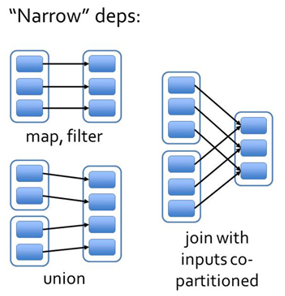
宽依赖
宽依赖指的是多个子RDD的Partition会依赖同一个父RDD的Partition，会引起shuffle,总结：宽依赖我们形象的比喻为超生（多对一）
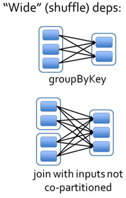
DAG
DAG(Directed Acyclic Graph) 叫做有向无环图，原始的 RDD 通过一系列的转换就就形成了 DAG，根据 RDD 之间的依赖关系的不同将 DAG 划分成不同的 Stage（阶段），对于窄依赖，partition的转换处理在Stage中完成计算。对于宽依赖，由于有 Shuffle 的存在，只能在 parent RDD 处理完成后，才能开始接下来的计算，因此宽依赖是划分 Stage 的依据。
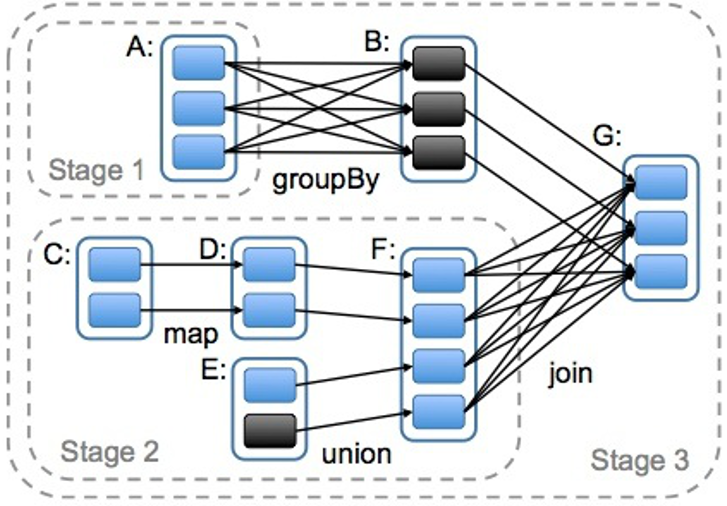
上图可看，A与B试一个宽依赖所以分成两个stage；F与G试一个宽依赖，所以分成了两个stage。
任务划分（面试重点）
RDD任务切分中间分为：Application、Job、Stage和Task
1）Application：初始化一个 SparkContext 即生成一个 Application
2）Job：一个 Action 算子就会生成一个 Job
3）Stage：根据RDD之间的依赖关系的不同将Job划分成不同的Stage，遇到一个宽依赖则划分一个Stage。
4）Task：Stage是一个TaskSet，将Stage划分的结果发送到不同的Executor执行即为一个Task。
WordCount案列规划图
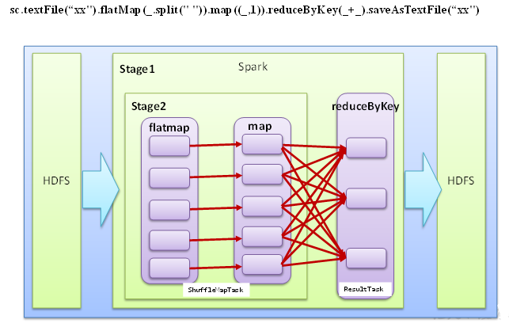
注意：Application->Job（行动算子）->Stage-> Task（分区）每一层都是1对n的关系。
一个应用可以多次调用行动算子（Job），而每个作业中可以有多个阶段，同时在一个阶段中有多个分区（每个分区就是一个任务）
阶段划分数量 = 1 + shuffle数量，源码分析：
[DAGScheduler.scala]
private[scheduler] def handleJobSubmitted(jobId: Int,
finalRDD: RDD[_],
func: (TaskContext, Iterator[_]) => _,
partitions: Array[Int],
callSite: CallSite,
listener: JobListener,
properties: Properties) {
var finalStage: ResultStage = null
try {
// New stage creation may throw an exception if, for example, jobs are run on a
// HadoopRDD whose underlying HDFS files have been deleted.
// 此处便是阶段数量中的1
finalStage = createResultStage(finalRDD, func, partitions, jobId, callSite)
...
// 提交
submitStage(finalStage)
}// 接上面 createResultStage
/**
* Create a ResultStage associated with the provided jobId.
*/
private def createResultStage(
rdd: RDD[_],
func: (TaskContext, Iterator[_]) => _,
partitions: Array[Int],
jobId: Int,
callSite: CallSite): ResultStage = {
// 获取或创建阶段
val parents = getOrCreateParentStages(rdd, jobId)
val id = nextStageId.getAndIncrement()
val stage = new ResultStage(id, rdd, func, partitions, parents, jobId, callSite)
stageIdToStage(id) = stage
updateJobIdStageIdMaps(jobId, stage)
stage
}// 接上面 getOrCreateParentStages
/**
* Get or create the list of parent stages for a given RDD. The new Stages will be created with
* the provided firstJobId.
*/
private def getOrCreateParentStages(rdd: RDD[_], firstJobId: Int): List[Stage] = {
// 拿到shuffle依赖做转换
getShuffleDependencies(rdd).map { shuffleDep =>
getOrCreateShuffleMapStage(shuffleDep, firstJobId)
}.toList
}// 接上面 getShuffleDependencies
private[scheduler] def getShuffleDependencies(
rdd: RDD[_]): HashSet[ShuffleDependency[_, _, _]] = {
// 返回值（其返回set中类型为ShuffleDependency，因此其中放的值便为shuffle）
val parents = new HashSet[ShuffleDependency[_, _, _]]
val visited = new HashSet[RDD[_]]
val waitingForVisit = new Stack[RDD[_]]
waitingForVisit.push(rdd)
while (waitingForVisit.nonEmpty) {
val toVisit = waitingForVisit.pop()
if (!visited(toVisit)) {
visited += toVisit
toVisit.dependencies.foreach {
// 模式匹配，只要某个RDD的依赖是shuffle的，就加到返回的parents中
case shuffleDep: ShuffleDependency[_, _, _] =>
parents += shuffleDep
case dependency =>
waitingForVisit.push(dependency.rdd)
}
}
}
parents
}// 在上面那个方法返回parents之后进行转换
// 接上上面 getOrCreateShuffleMapStage
/**
* Gets a shuffle map stage if one exists in shuffleIdToMapStage. Otherwise, if the
* shuffle map stage doesn't already exist, this method will create the shuffle map stage in
* addition to any missing ancestor shuffle map stages.
*/
private def getOrCreateShuffleMapStage(
shuffleDep: ShuffleDependency[_, _, _],
firstJobId: Int): ShuffleMapStage = {
shuffleIdToMapStage.get(shuffleDep.shuffleId) match {
// 模式匹配，若当前stage已经有了，则直接返回；
case Some(stage) =>
stage
// 若没有则创建
case None =>
// Create stages for all missing ancestor shuffle dependencies.
getMissingAncestorShuffleDependencies(shuffleDep.rdd).foreach { dep =>
// Even though getMissingAncestorShuffleDependencies only returns shuffle dependencies
// that were not already in shuffleIdToMapStage, it's possible that by the time we
// get to a particular dependency in the foreach loop, it's been added to
// shuffleIdToMapStage by the stage creation process for an earlier dependency. See
// SPARK-13902 for more information.
if (!shuffleIdToMapStage.contains(dep.shuffleId)) {
createShuffleMapStage(dep, firstJobId)
}
}
// Finally, create a stage for the given shuffle dependency.
createShuffleMapStage(shuffleDep, firstJobId)
}
}// 接第一个最后的提交
/** Submits stage, but first recursively submits any missing parents. */
private def submitStage(stage: Stage) {
val jobId = activeJobForStage(stage)
if (jobId.isDefined) {
logDebug("submitStage(" + stage + ")")
if (!waitingStages(stage) && !runningStages(stage) && !failedStages(stage)) {
val missing = getMissingParentStages(stage).sortBy(_.id)
logDebug("missing: " + missing)
if (missing.isEmpty) {
logInfo("Submitting " + stage + " (" + stage.rdd + "), which has no missing parents")
submitMissingTasks(stage, jobId.get)
} else {
for (parent <- missing) {
submitStage(parent)
}
waitingStages += stage
}
}
} else {
abortStage(stage, "No active job for stage " + stage.id, None)
}
} // 接上面的 submitMissingTasks（这只是其中一部分）
/** Called when stage's parents are available and we can now do its task. */
private def submitMissingTasks(stage: Stage, jobId: Int) {
...
val tasks: Seq[Task[_]] = try {
stage match {
case stage: ShuffleMapStage =>
// 根据分区计算任务
partitionsToCompute.map { id =>
val locs = taskIdToLocations(id)
val part = stage.rdd.partitions(id)
// 最后返回为一个task
new ShuffleMapTask(stage.id, stage.latestInfo.attemptId,
taskBinary, part, locs, stage.latestInfo.taskMetrics, properties, Option(jobId),
Option(sc.applicationId), sc.applicationAttemptId)
}
case stage: ResultStage =>
partitionsToCompute.map { id =>
val p: Int = stage.partitions(id)
val part = stage.rdd.partitions(p)
val locs = taskIdToLocations(id)
new ResultTask(stage.id, stage.latestInfo.attemptId,
taskBinary, part, locs, id, properties, stage.latestInfo.taskMetrics,
Option(jobId), Option(sc.applicationId), sc.applicationAttemptId)
}
}
}
...
if (tasks.size > 0) {
logInfo("Submitting " + tasks.size + " missing tasks from " + stage + " (" + stage.rdd + ")")
stage.pendingPartitions ++= tasks.map(_.partitionId)
logDebug("New pending partitions: " + stage.pendingPartitions)
// 将所有信息封装成一个TaskSet进行提交
taskScheduler.submitTasks(new TaskSet(
tasks.toArray, stage.id, stage.latestInfo.attemptId, jobId, properties))
stage.latestInfo.submissionTime = Some(clock.getTimeMillis())
}
...
}RDD缓存
RDD通过persist方法或cache方法可以将前面的计算结果缓存，默认情况下 persist() 会把数据以序列化的形式缓存在 JVM 的堆空间中。
但是并不是这两个方法被调用时立即缓存，而是触发后面的action时，该RDD将会被缓存在计算节点的内存中，并供后面重用。
def persist(): this.type = persist(StorageLevel.MEMORY_ONLY)def cache(): this.type = persist()通过查看源码发现cache最终也是调用了persist方法，默认的存储级别都是仅在内存存储一份，Spark的存储级别还有好多种，存储级别在object StorageLevel中定义的。
object StorageLevel {
// 不缓存
val NONE = new StorageLevel(false, false, false, false)
// 只缓存到磁盘
val DISK_ONLY = new StorageLevel(true, false, false, false)
// 缓存盘2份副本
val DISK_ONLY_2 = new StorageLevel(true, false, false, false, 2)
// 只缓存到内存
val MEMORY_ONLY = new StorageLevel(false, true, false, true)
val MEMORY_ONLY_2 = new StorageLevel(false, true, false, true, 2)
// 缓存到内存序列化
val MEMORY_ONLY_SER = new StorageLevel(false, true, false, false)
val MEMORY_ONLY_SER_2 = new StorageLevel(false, true, false, false, 2)
val MEMORY_AND_DISK = new StorageLevel(true, true, false, true)
val MEMORY_AND_DISK_2 = new StorageLevel(true, true, false, true, 2)
val MEMORY_AND_DISK_SER = new StorageLevel(true, true, false, false)
val MEMORY_AND_DISK_SER_2 = new StorageLevel(true, true, false, false, 2)
// 堆外内存（JVM里面的内存是堆内，不是其中的内存叫堆外）
val OFF_HEAP = new StorageLevel(true, true, true, false, 1)在存储级别的末尾加上“_2”来把持久化数据存为两份
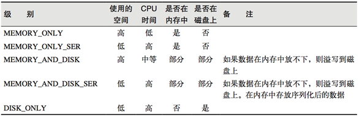
缓存有可能丢失，或者存储存储于内存的数据由于内存不足而被删除，RDD的缓存容错机制保证了即使缓存丢失也能保证计算的正确执行。通过基于RDD的一系列转换，丢失的数据会被重算，由于RDD的各个Partition是相对独立的，因此只需要计算丢失的部分即可，并不需要重算全部Partition。
（1）创建一个RDD
scala> val rdd = sc.makeRDD(Array("bigData"))
——>
rdd: org.apache.spark.rdd.RDD[String] = ParallelCollectionRDD[0] at makeRDD at <console>:24（2）将RDD转换为携带当前时间戳不做缓存
// 后面加上一个时间戳
scala> val nocache = rdd.map(_.toString+System.currentTimeMillis)
——>
nocache: org.apache.spark.rdd.RDD[String] = MapPartitionsRDD[1] at map at <console>:26（3）多次打印结果
scala> nocache.collect
——>
res0: Array[String] = Array(bigData1601728101126)
scala> nocache.collect
——>
res1: Array[String] = Array(bigData1601728114573)
scala> nocache.collect
——>
res2: Array[String] = Array(bigData1601728141278)（4）将RDD转换为携带当前时间戳并做缓存
scala> val cache = rdd.map(_.toString+System.currentTimeMillis).cache
——>
cache: org.apache.spark.rdd.RDD[String] = MapPartitionsRDD[2] at map at <console>:26（5）多次打印做了缓存的结果
scala> cache.collect
——>
res3: Array[String] = Array(bigData1601728208803)
scala> cache.collect
——>
res4: Array[String] = Array(bigData1601728208803)
scala> cache.collect
——>
res5: Array[String] = Array(bigData1601728208803)scala> cache.toDebugString
res8: String =
(1) MapPartitionsRDD[2] at map at <console>:26 [Memory Deserialized 1x Replicated]
| CachedPartitions: 1; MemorySize: 104.0 B; ExternalBlockStoreSize: 0.0 B; DiskSize: 0.0 B
| ParallelCollectionRDD[0] at makeRDD at <console>:24 [Memory Deserialized 1x Replicated]debug之后可以看出，其在依赖关系中间加了一个缓存步骤
RDD CheckPoint
Spark中对于数据的保存除了持久化操作之外，还提供了一种检查点的机制，检查点（本质是通过将RDD写入Disk做检查点）是为了通过lineage做容错的辅助，lineage过长会造成容错成本过高，这样就不如在中间阶段做检查点容错，如果之后有节点出现问题而丢失分区，从做检查点的RDD开始重做Lineage，就会减少开销。检查点通过将数据写入到HDFS文件系统实现了RDD的检查点功能。
为当前RDD设置检查点。该函数将会创建一个二进制的文件，并存储到checkpoint目录中，该目录是用SparkContext.setCheckpointDir()设置的。在checkpoint的过程中，该RDD的所有依赖于父RDD中的信息将全部被移除。对RDD进行checkpoint操作并不会马上被执行，必须执行Action操作才能触发。
案例实操：
package com.swenchao.spark
import org.apache.spark.rdd.RDD
import org.apache.spark.{SparkConf, SparkContext}
/**
* @Author: Swenchao
* @Date: 2020/10/03 下午 08:25
* @Func: 检查点（设置检查点就是将血缘关系保存成文件）
*/
object Spark17_Checkpoint {
def main(args: Array[String]): Unit = {
val conf: SparkConf = new SparkConf().setMaster("local[*]").setAppName("WordCount")
// 创建Spark上下文对象
val sc: SparkContext = new SparkContext(conf)
// 设定检查点保存目录
sc.setCheckpointDir("CheckPoint")
// 构造rdd
val rdd: RDD[Int] = sc.makeRDD(List(1, 2, 3, 4))
// 进行简单处理
val mapRDD: RDD[(Int, Int)] = rdd.map((_, 1))
val reduceRDD: RDD[(Int, Int)] = mapRDD.reduceByKey(_ + _)
// 设置检查点
reduceRDD.checkpoint()
// 输出查看
reduceRDD.foreach(println)
// 血缘关系
println(reduceRDD.toDebugString)
sc.stop()
}
}运行结果差距（运行两遍，查看血缘关系的变化）
// 运行第一遍
(8) ShuffledRDD[2] at reduceByKey at Spark17_Checkpoint.scala:27 []
+-(8) MapPartitionsRDD[1] at map at Spark17_Checkpoint.scala:26 []
| ParallelCollectionRDD[0] at makeRDD at Spark17_Checkpoint.scala:23 []
// 运行第二遍
(8) ShuffledRDD[2] at reduceByKey at Spark17_Checkpoint.scala:27 []
| ReliableCheckpointRDD[3] at foreach at Spark17_Checkpoint.scala:33 []待续…
RDD编程全部更新完了，这一模块基本就结束了。同时SparkCore的大头也就基本结束了，还剩键值对RDD数据分区器、数据读取与保存。
希望这个假期如自己所愿，心愿节后能够实现
屁屁一切顺利